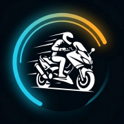

Rideboard
Destek
Rideboard, VOGE motosikletin Bluetooth üzerinden yayınladığı verileri okuyup telefonda gösterge olarak gösteren ücretsiz bir uygulamadır: hız ve devir, akü sağlığı, motor sıcaklığı, yakıt, sürüş geçmişi ve yol üzerindeki yağmur uyarıları. Uygulama yalnızca okur; motora hiçbir şey göndermez.
İletişim:
github.com/samet-y/rideboard-site/issues
Hata bildirirken telefon modelini, motor modelini ve
mümkünse Ham veri → 📁 Kayıtlar'dan ilgili sürüşün kaydını ekleyin.
Uyumlu motorlar
VOGE SR3 ile denendi. Başka bir VOGE modeliniz varsa kayıt göndererek desteğin eklenmesine yardım edebilirsiniz.
Motor bulunamıyor
- Kontağı açın; gösterge modülü yalnızca kontak açıkken yayın yapar.
- Telefonun Bluetooth'u ve uygulamanın Bluetooth izni açık olmalı.
- Motor resmi VOGE uygulamasına bağlıysa o uygulamayı kapatın.
- Ayarlar → "Kayıtlı cihazı unut ve yeniden tara" ile baştan arayın.
Hız neden GPS'ten farklı?
Motorun hız göstergesi gerçek hızdan yaklaşık %10 fazla gösterir. Uygulama bu farkı GPS ile sürüş sırasında kendisi öğrenir ve gerçek hızı ayrıca gösterir.
Rideboard bağımsız bir projedir; VOGE ya da Loncin ile resmi bir bağlantısı yoktur.
Support
Rideboard is a free app that reads the data your VOGE motorcycle broadcasts over Bluetooth and shows it as a dashboard on your phone: speed and engine speed, battery health, engine temperature, fuel, ride history and rain alerts for the road ahead. The app only reads; it never sends anything to the motorcycle.
Contact:
github.com/samet-y/rideboard-site/issues
When reporting a problem, include your phone model, your
motorcycle model and, if possible, the recording of that ride from Raw data →
📁 Recordings.
Compatible motorcycles
Tested with the VOGE SR3. If you have another VOGE model, sending a recording helps add support for it.
The motorcycle isn't found
- Turn the ignition on; the dashboard module only broadcasts with the ignition on.
- The phone's Bluetooth and the app's Bluetooth permission must be on.
- If the motorcycle is connected to the official VOGE app, close it.
- Settings → "Forget saved device and rescan" searches from scratch.
Why is the speed different from GPS?
The motorcycle's speedometer reads about 10% higher than the real speed. The app learns this difference from GPS while you ride and shows the real speed as well.
Rideboard is an independent project and is not affiliated with VOGE or Loncin.